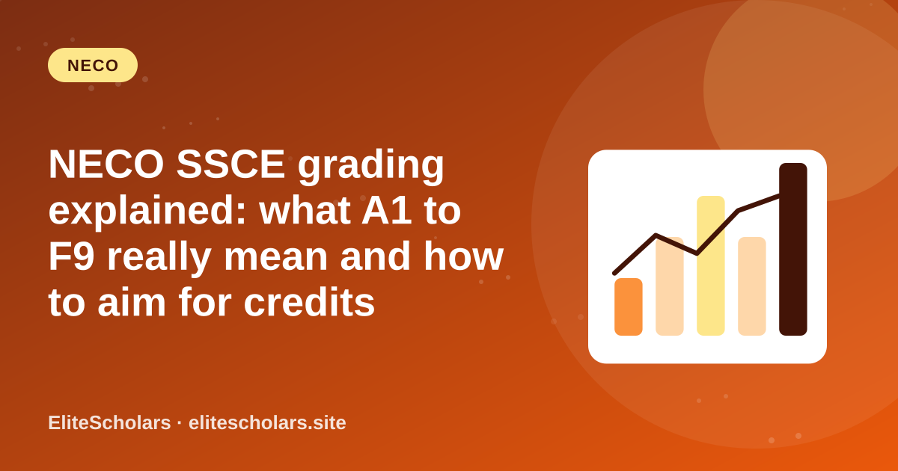
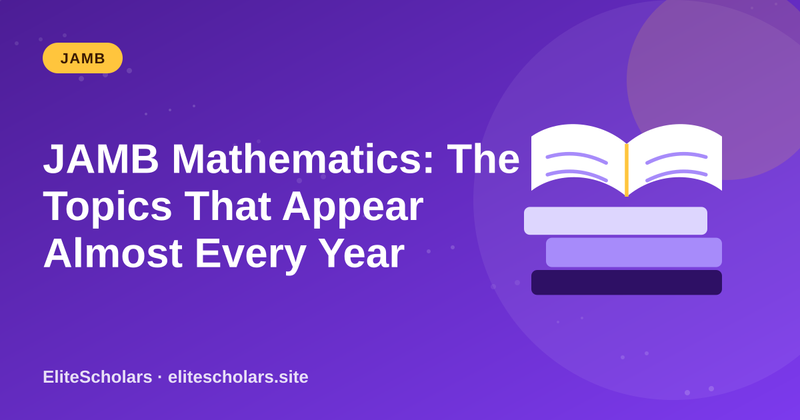
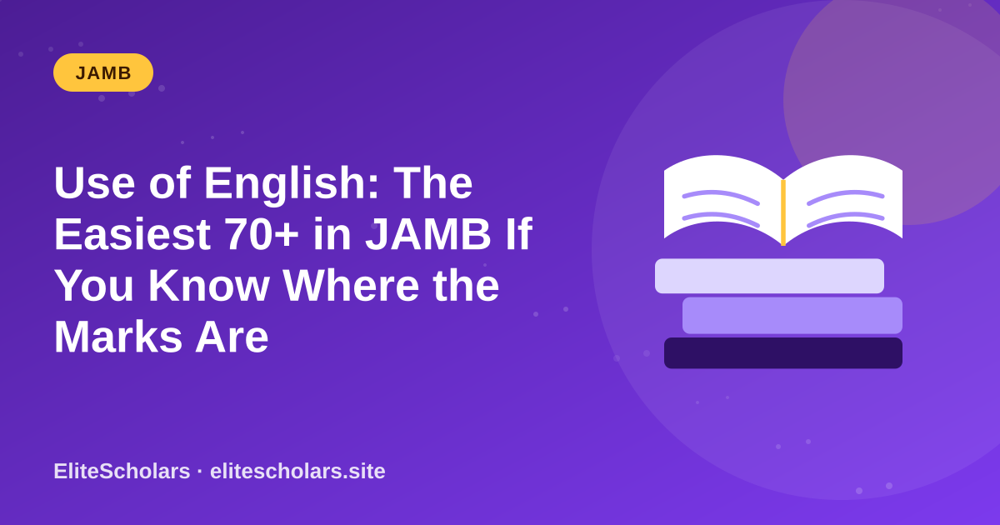

JAMB updates, study strategies, university tips and real talk. No fluff.

A1, B3, C6, F9: your NECO result is a row of codes, and each code decides what you can do next. Here is what every grade means, which ones count as a credit, and how to plan your marks.

You cannot study the whole of Maths in the time you have. Focus on these high-frequency areas first.

English is compulsory, so every candidate writes it. Here is how to stop leaking marks in comprehension, lexis and structure.
Past questions are gold, but only if you use them as a diagnostic tool and not as a reading material to cram.
Most candidates only panic when registration opens. Here is a simple 14-week plan that puts you months ahead before the crowd even begins.
Scoring 300+ in JAMB is not about being naturally gifted. It is about having the right system and sticking to it. Here is the exact breakdown, from what to study to how to think in the exam hall.
Over 2.2 million candidates wrote the 2026 UTME. Results are dropping in batches right now. Before you spiral into panic or pop champagne, read this — because your raw score is only half the story.